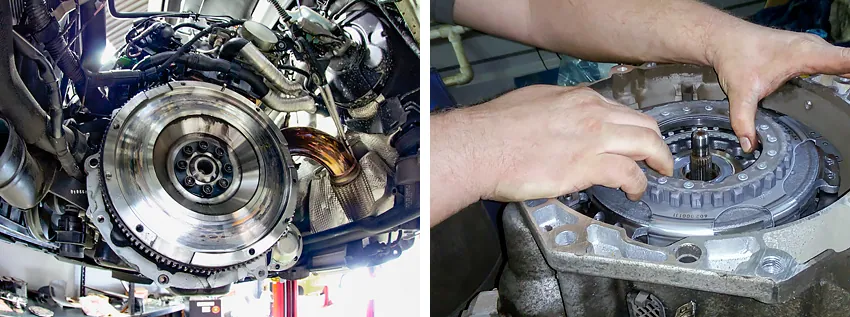
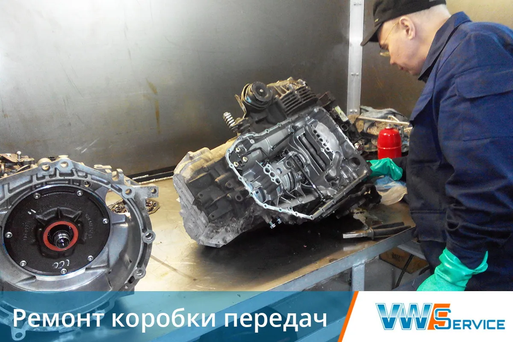
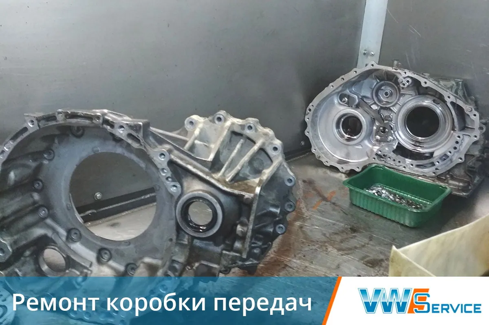
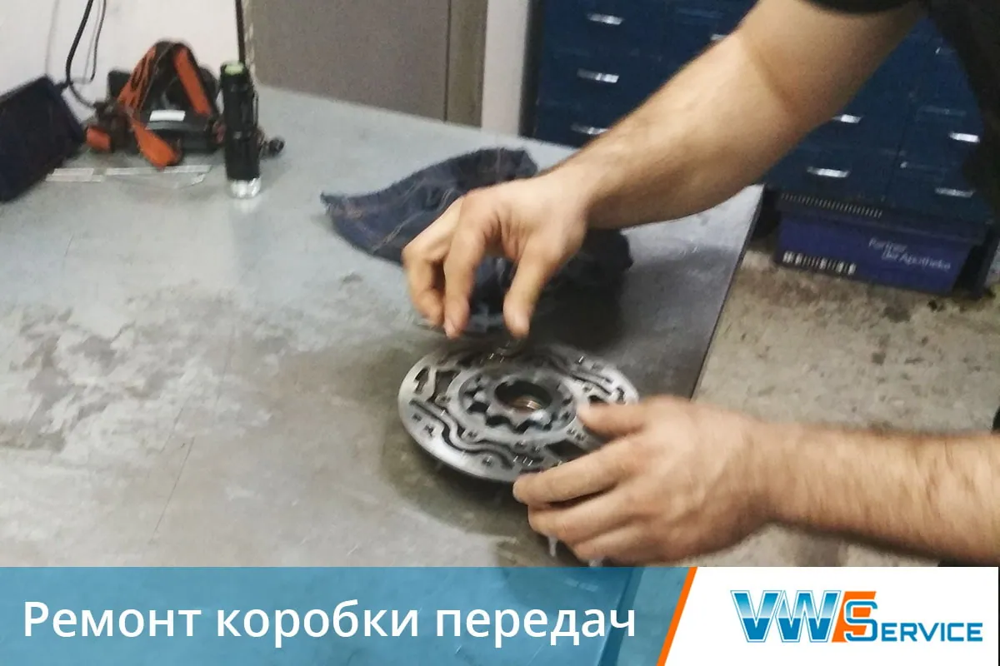
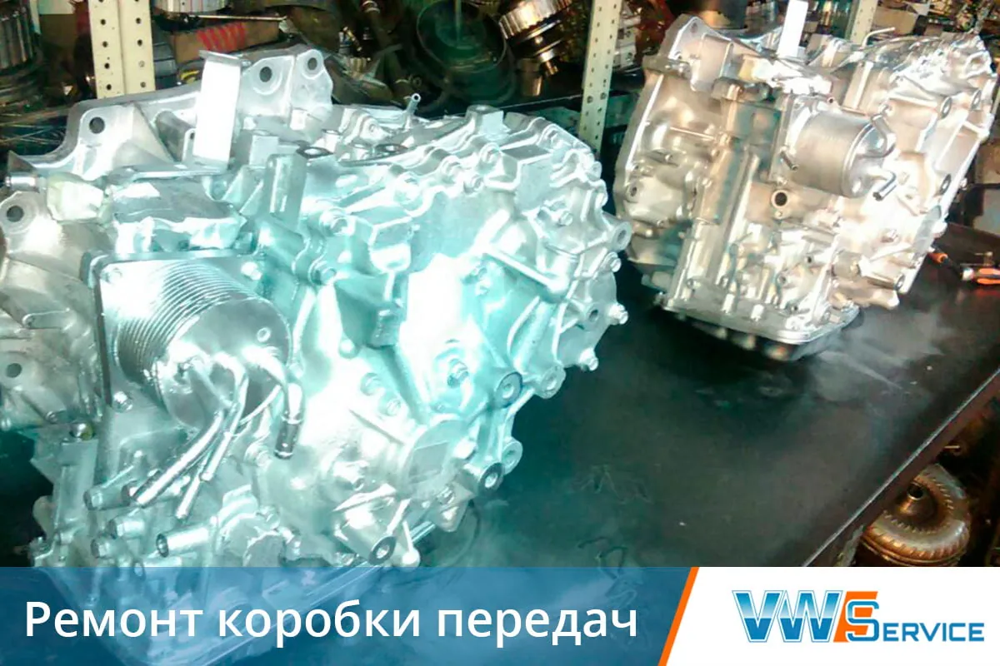
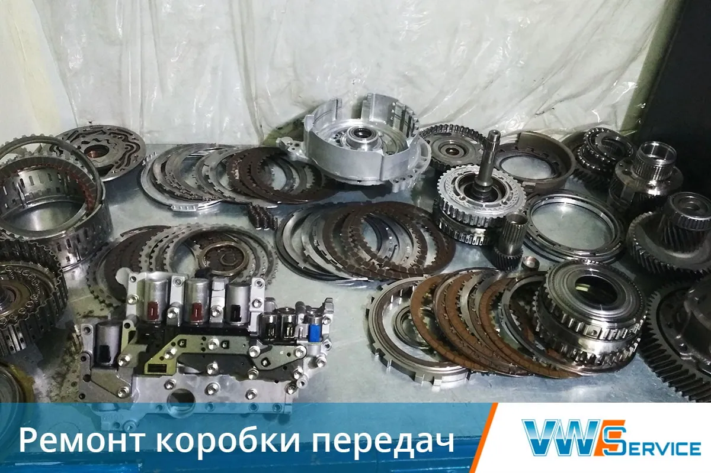
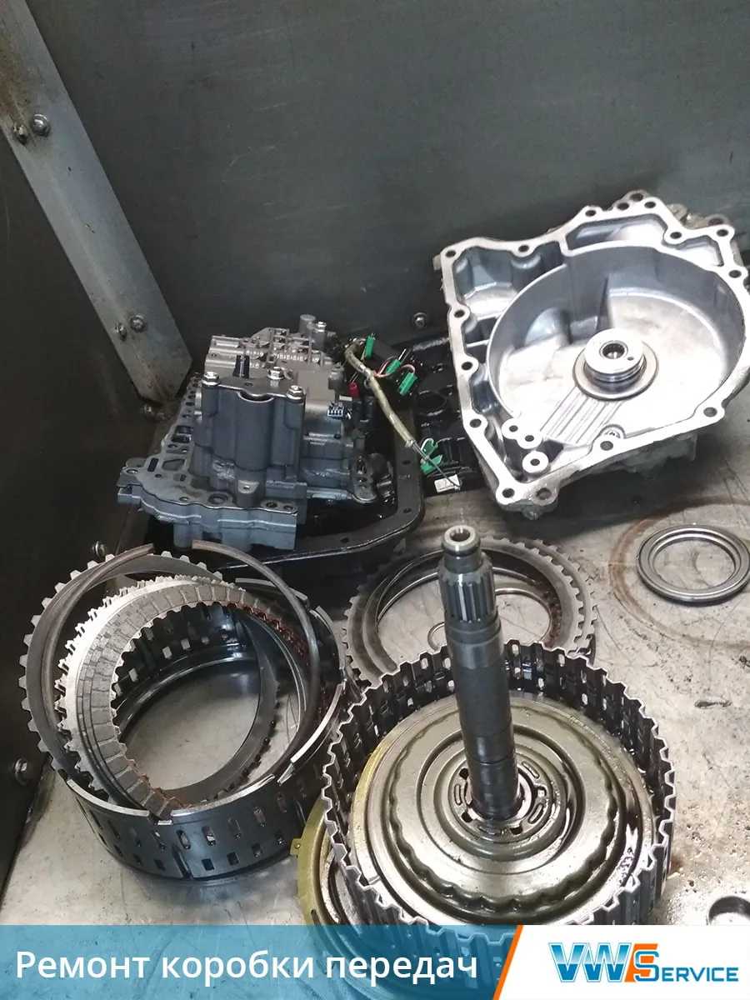

Ремонт трансмиссии
Диагностика, обслуживание и ремонт трансмиссии автомобилей VAG и других марок.
Записаться
Трансмиссия — система, которая состоит из нескольких механизмов. Они служат для передачи крутящего момента от двигателя на ведущие колеса автомобиля. Любая неисправность этого узла — серьезная проблема, которая может поставить под угрозу жизнь водителя. Уважаемые автовладельцы! Регулярно проводите диагностику трансмиссии, чтобы своевременно обнаружить и исправить дефекты.
Наш автотехцентр вот уже более 20 лет лидирует среди сервисных центров ЮАО Москвы, в том числе в области ремонта трансмиссии, и заслужил отличную репутацию. Все это — благодаря высокоточному оборудованию, опыту инженеров и механиков. Наш приоритет — качественная техническая помощь по демократичным ценам.
Основные признаки неисправностей трансмиссии
При вождении обратите внимание на несколько признаков повреждения системы передач:
- утечка масла;
- запах гари;
- необычный шум при переходе на нейтральную скорость;
- даже при нажатии на педаль сцепления — «прихватывание» муфты сцепления (диск не отсоединяется от маховика);
- нет плавности, сильная вибрация при движении рычага КПП.
Наличие хотя бы одного из этих признаков говорит о том, что вашей машине нужно срочное техническое обслуживание. Мы готовы вам помочь.
Ремонт трансмиссии в нашем автосервисе
Как наши специалисты выполняют ремонтные работы?
- Проводят диагностику с использованием современного оборудования.
- Демонтируют и подетально разбирают систему.
- Выявляют причины поломки, оценивают состояние комплектующих (дефектовка).
- Составляют дефектную ведомость.
- Согласовывают с вами перечень и стоимость работ.
- Восстанавливают целостность, работоспособность узлов и деталей.
- Поэтапно собирают устройство.
- Монтируют трансмиссию на штатное место.
- Регулируют агрегат и проверяют, как он функционирует в рабочем режиме.

Чаще всего требуется восстановить полуось, трос, привод сцепления, муфту, провести замену шарнира равных угловых скоростей или дифференциала, а также отремонтировать механическую или автоматическую коробку передач.
Важно! Чтобы в будущем трансмиссия вашего автомобиля работала бесперебойно, необходимо заменить трансмиссионное масло. Если его не хватает или оно загрязнено (именно тогда появляется характерный запах гари), составные элементы раздаточной коробки изнашиваются — понадобится дорогостоящий ремонт.
Рекомендации по правильной эксплуатации
Проблемы с трансмиссией не приведут к большим затратам, если вовремя проверять:
- работу сцепления, коробки передач;
- отсутствие утечки масла;
- уровень масла в приводе сцепления (восполнять до рекомендуемого значения — после 10 000 км пробега);
- ход педали сцепления (регулировка педали проводится после 20 000 км).
Также рекомендуем осуществлять замену масла через каждые 60 000 км пробега.
Цена услуги и гарантии
Стоимость ремонта трансмиссии автомобиля зависит от степени поломки и запасных частей, которые необходимо отремонтировать или заменить. В случае ремонта влияние на конечный прайс оказывает трудоемкость, тогда как при замене — выбор между оригинальной деталью и качественным аналогом.
Мы предоставляем своим клиентам гарантию на все виды работ.
За ремонтом трансмиссии обращайтесь к нам, вы получите отличное соотношение цены и качества.
Техцентр VWS
Ремонтирует трансмиссии Диагностика неисправности
Оригинальные запчасти
Капитальный ремонт
АКПП / МКПП / DSG
Гарантия
Узнать подробнее
Ремонтируем коробки передач






Выберите модель
Другие услуги
Контакты
- г. Москва, 1-й Дорожный проезд, д. 5АЮАО Москвы. Ближайшее метро — «Южная»
- Ежедневно с 8:30 до 20:30Без выходных. Приём автомобилей — круглосуточно
- +7 (495) 260-06-02Эвакуатор: +7 (495) 796-29-99